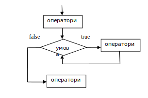

Теоретичні відомості
Contents
Теоретичні відомості¶
Цикли – це інструкції, які виконують одну й туж послідовність дій, покидіє задана умова. Типова блок-схема циклу показана на рис. 1.3.
 Рисунок 1.3. — Блок-схема циклічного процесу.
За побудовою цикли ділять на цикли типу арифметичної прогресії і ітерації. Цикл типу арифметичної прогресії має відоме кінцеве число повторень (for). У циклі типу ітерації число повторень невідомо (while).
Цикл for¶
Цикл for, також називається циклом з параметром, в мові Python багатий можливостями. У циклі for вказується змінна і множина значень, за яким буде пробігати змінна. Множина значень може бути задана списком, кортежем, рядком або діапазоном.
Формальне визначення циклу for:
for <int_var> in <iterable_range>:
<інструкції>
Після ключового слова for йде змінна int_var, яка зберігає цілі числа (назва змінної може бути будь-якою), потім ключове слово in, ітератор (наприклад, виклик функції range) і двокрапка. А з наступного рядка розташовується блок інструкцій циклу, які також повинні мати відступи від початку рядка. Ось простий приклад використання циклу, де в ролі множини значень використовується кортеж:
i = 1
for color in 'red','orange','yellow','green','cyan','blue', 'violet':
print('#', i,' color of rainbow is ', color, sep='')
i+=1
#1 color of rainbow is red
#2 color of rainbow is orange
#3 color of rainbow is yellow
#4 color of rainbow is green
#5 color of rainbow is cyan
#6 color of rainbow is blue
#7 color of rainbow is violet
У цьому прикладі змінна color послідовно приймає значення 'red', 'orange' і т.д. У тілі циклу виводиться повідомлення, яке містить назву кольору, тобто значення змінної color, а також номер ітерації циклу число, яке спочатку дорівнює 1, а потім збільшується на один (інструкцією i += 1) з кожним проходом циклу. Інструкція i += 1 еквівалентна конструкції i = i + 1 (це просто скорочений запис). Такий скорочений запис можна використовувати для всіх арифметичних операцій: *=, -=, /=, %=…
У списку значень можуть бути вирази різних типів, наприклад:
for i in 1, 2, 3, 'one', 'two', 'three':
print(i)
1
2
3
one
two
three
При перших трьох ітераціях циклу змінна i буде приймати значення типу int, при наступних трьох — типу str.
При виконанні циклу Python послідовно отримує всі значення з колекції і зберігає їх у змінній int_var. При першому проході цикл отримує перше значення з колекції, при другому — друге значення і так далі, поки не перебере їх усі. Коли всі значення у колекції будуть перебрані, цикл завершує свою роботу.
Функция range¶
Як правило, цикли for використовуються або для повторення будь-якої послідовності дій задану кількість разів, або для зміни значення змінної в циклі від деякого початкового значення до деякого кінцевого. Для повторення циклу деяке задане число разів n можна використовувати цикл for разом з функцією range:
for i in range(4):
# рівносильно інструкції
# for i in 0, 1, 2, 3:
# тут можна виконувати циклічні дії
print(i)
print(i**2)
# цикл закінчився, оскільки закінчився блок з відступом
print('Кінець циклу')
0
0
1
1
2
4
3
9
Кінець циклу
Функція range має такі форми:
range(stop): повертає всі цілі числа від 0 доstop;range(start, stop): повертає всі цілі числа в проміжку від[start, stop);range(start, stop, step): повертає цілі числа в проміжку від[start, stop), які збільшуються на значенняstep.
Приклади викликів функції range:
range(5) # 0,1,2,3,4
range(1,5) # 1,2,3,4
range(2,10,2) # 2,4,6,8
range(5,0,-1) # 5,4,3,2,1
range(5, 0, -1)
Наприклад, виведемо послідовно всі числа від 0 до 4:
for i in range(5):
print(i, end=" ")
0 1 2 3 4
Вкладені цикли¶
Одні цикли всередині себе можуть містити інші цикли. Розглянемо на прикладі виведення таблиці множення:
for i in range(1, 10):
for j in range(1, 10):
print(i*j, end="\t")
print("\n")
1 2 3 4 5 6 7 8 9
2 4 6 8 10 12 14 16 18
3 6 9 12 15 18 21 24 27
4 8 12 16 20 24 28 32 36
5 10 15 20 25 30 35 40 45
6 12 18 24 30 36 42 48 54
7 14 21 28 35 42 49 56 63
8 16 24 32 40 48 56 64 72
9 18 27 36 45 54 63 72 81
Зовнішній цикл for i in range(1, 10) спрацьовує 9 разів, так як в колекції, яка повертається функцією range, 9 чисел. Внутрішній цикл for j in range(1, 10) спрацьовує 9 разів для однієї ітерації зовнішнього циклу, і відповідно 81 разів для всіх ітерацій зовнішнього циклу. У кожній ітерації внутрішнього циклу на консоль буде виводитися добуток чисел i та j.
Цикл while¶
Універсальним організатором циклу в мові програмування Python (як і в багатьох інших мовах) є конструкція while. Слово “while” з англійської мови перекладається як “поки” (як у фразі “поки логічне вираження повертає істину, виконувати певні операції”). Конструкцію while на мові Python можна описати наступною схемою:
while <логічний_вираз>:
<інструкції>
Ця схема є приблизною, оскільки логічний вираз в заголовку циклу while може бути більш складним, а змінюватися може змінна (або вираз).
Коли виконання програмного коду доходить до циклу while, виконується логічний вираз в заголовку, і, якщо було отримано True (істина), виконуються вкладені вирази. Після потік виконання програми знову повертається в заголовок циклу while, і знову перевіряється умова. Якщо умова ніколи не буде хибною, то не буде причин зупинки циклу і програма зациклиться. Щоб цього не сталося, необхідно передбачити можливість виходу з циклу — хибність виразу в заголовку. Таким чином, змінюючи значення змінної в тілі циклу, можна довести логічний вираз до хибності.
Цю змінювану змінну, яка використовується в заголовку циклу while, зазвичай називають лічильником. Як і будь-якій змінній їй можна давати довільні імена. Найпростіший цикл while на мові програмування Python може виглядати так:
str1 = "+"
i = 0
while i < 10:
print(str1)
i = i + 1
+
+
+
+
+
+
+
+
+
+
В останньому рядку коду відбувається збільшення значення змінної i на одиницю, тому з кожним оборотом циклу її значення збільшується. Коли буде досягнуто число 10, логічний вираз i < 10 дасть помилковий результат, виконання тіла циклу буде припинено, а потік виконання програми перейде на команди, які йдуть за всією конструкцією циклу. Результатом виконання скрипта, наведеного вище, є вивід на екран десяти знаків + в стовпчик. Якщо збільшувати лічильник в тілі циклу не на одиницю, а на 2, то буде виведено лише п’ять знаків, тому що цикл зробить тільки п’ять оборотів. Всі інструкції, які відносяться до циклу while, розташовуються на окремих рядках і повинні мати відступ від початку рядка.
choice = "y"
while choice.lower() == "y":
print("Привіт")
choice = input("Для продовження натисніть Y, а для виходу іншу клавішу: ")
print("Робота програми завершена ")
Привіт
Привіт
Робота програми завершена
В даному випадку цикл while триватиме, поки змінна choice містить латинську букву "Y" або "y". Сам блок циклу складається з двох інструкцій. Спочатку виводиться повідомлення “Привіт”, а потім уводиться нове значення для змінної choice. І якщо користувач натисне якусь іншу клавішу, відмінну від Y, відбудеться вихід з циклу, так як умова choice.lower () == "y" поверне значення False.
Кожен такий прохід циклу називається ітерацією. Також зверніть увагу, що остання інструкція print("Робота програми завершена") не має відступів від початку рядка, тому вона не входить в цикл while. Істотна відмінність циклу while від циклу for: while використовується тоді, коли заздалегідь невідомо, скільки разів має повторюватися деяка дія.
Вихід із циклу, break і continue¶
Для управління циклом можна використовувати спеціальні оператори break і continue. Оператор break здійснює вихід з циклу. А оператор continue виконує перехід до наступної ітерації циклу.
Оператор break може використовуватися, якщо в циклі утворюються умови, які несумісні з його подальшим виконанням.
Приклад:
print("Для виходу натисніть Y")
while True:
data = input("Уведіть суму для обміну: ")
if data.lower() == "y":
break # вихід з циклу
money = int(data)
cache = round(money/26,2)
print("До видачі ", cache, "доларів ")
print("Робота обмінного пункту завершена ")
Для виходу натисніть Y
До видачі 0.38 доларів
Робота обмінного пункту завершена
Тут продемонстровано нескінченний цикл, так як умова while True завжди істинна і завжди буде виконуватися. Це популярний прийом для створення програм, які повинні виконуватися невизначено довго.
У самому циклі отримуємо введення з консолі. Передбачається, що користувач буде вводити число — умовну суму грошей для обміну. Якщо користувач вводить літеру "Y" або "y", то за допомогою оператора break виходимо з циклу. Інакше ділимо його на обмінний курс, за допомогою функції round округляється результат і виводиться на консоль. І так до нескінченності, поки користувач не захоче вийти з програми, натиснувши на клавішу Y.
Але що, якщо користувач введе від’ємне число? У цьому випадку програма також видасть від’ємний результат, що не є коректною поведінкою. І в цьому випадку перед обчисленням можна перевірити значення, менше воно нуля, і якщо менше, за допомогою оператора continue виконати перехід до наступної ітерації циклу без його завершення:
print ("Для виходу натисніть Y")
while True:
data = input ("Уведіть суму для обміну:")
if data.lower () == "y":
break # вихід з циклу
money = int (data)
if money < 0:
print ("Сума повинна бути додатньою!")
continue
cache = round (money / 26, 2)
print ("До видачі", cache, "доларів")
print ("Робота обмінного пункту завершена")
Для виходу натисніть Y
Сума повинна бути додатньою!
До видачі 384.62 доларів
Робота обмінного пункту завершена
І в цьому випадку не можна отримати результат для від’ємної суми.